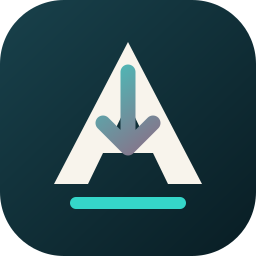

Formats & qualité
Vidéo MP4 ou MKV, audio MP3, résolution jusqu’à 4K. Sous-titres français, anglais ou multilingues.

AgenFetchAgenFetch
Application Windows locale qui pilote yt-dlp : vidéos, Shorts, lives et playlists, directement dans ton dossier.
Fonctionnement
Colle un lien, confirme, retrouve la vidéo là où tu l’as choisie.
Depuis l’extension Chrome/Edge ou en collant un ou plusieurs liens YouTube.
Vérifie le titre, la chaîne et la miniature, puis ajoute jusqu’à 50 liens.
yt-dlp, FFmpeg et Deno sont intégrés. Progression, annulation, notifications.
Capacités
Qualité jusqu’à 4K, audio MP3, sous-titres, file d’attente et outils toujours à jour.
Vidéo MP4 ou MKV, audio MP3, résolution jusqu’à 4K. Sous-titres français, anglais ou multilingues.
Jusqu’à 50 liens traités dans l’ordre. Journal, vitesse, ETA et historique local.
Windows 10/11 x64. Pas besoin d’installer Node, yt-dlp ou FFmpeg toi-même.
Un bouton AgenFetch sur YouTube ouvre l’app via agenfetch:// — rien ne part sans toi.
Confidentialité
AgenFetch n’envoie aucune donnée vers un serveur AgenStudio. Pas de compte YouTube, pas de cookies, pas de DRM contourné. L’historique et la file restent sur ton ordinateur.
Bêta 0.2
Télécharge l’installateur. Windows SmartScreen peut afficher « Éditeur inconnu » — la bêta n’est pas encore signée. Vérifie l’empreinte dans SHA256SUMS.txt.
Windows 10 ou 11 · x64 · MIT License · by AgenStudio